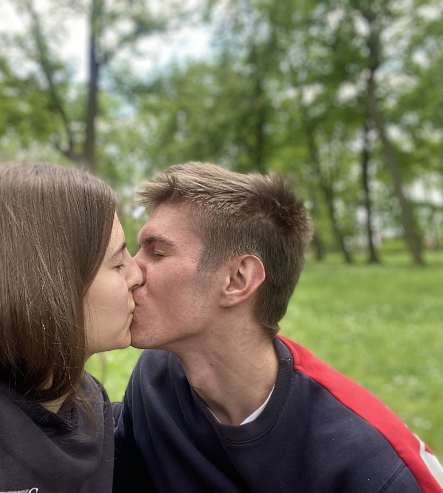
První naše společná fotka ale druhá pusa lásko , na ten den nikdy nezapomenu , a navždy za něj budu vděčnej
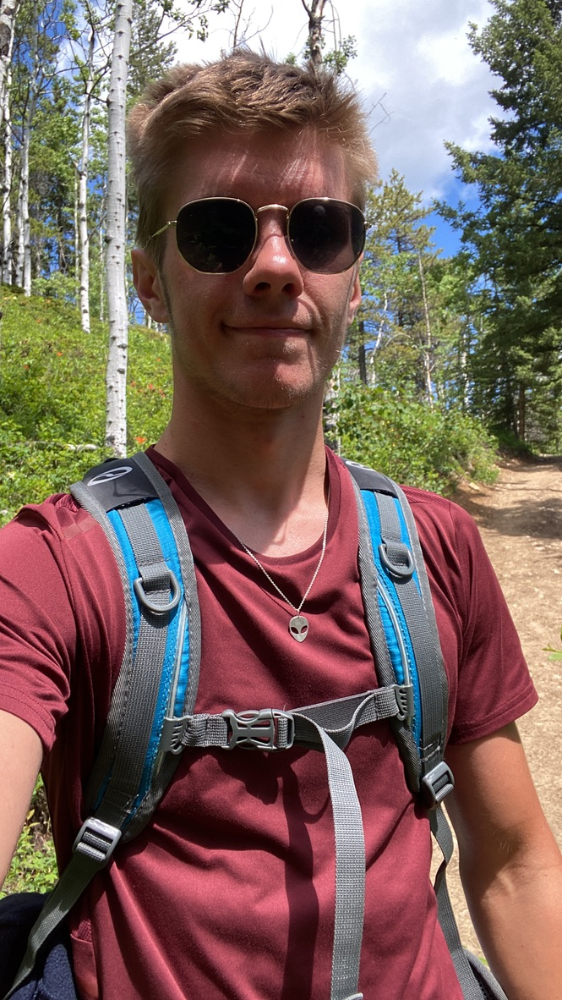
Já na cestách, ty doma, a přesto jsme si byli nejblíž. I takové okamžiky tvoří náš příběh.
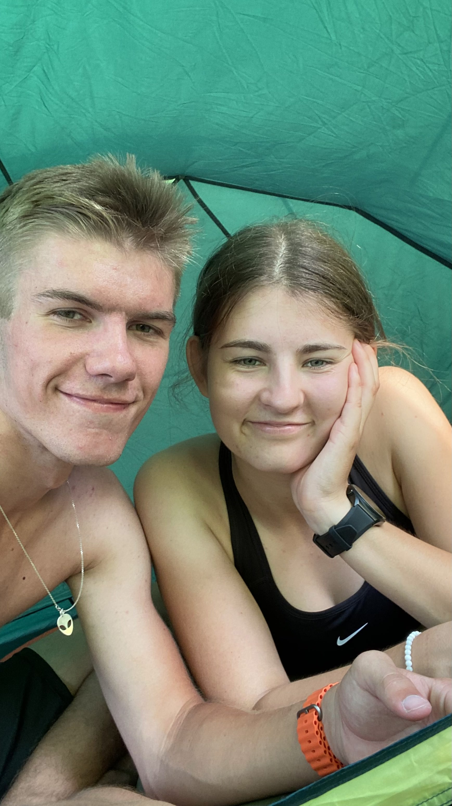
Jeden z těch dnů, kdy bylo všechno dokonalé jen proto, že jsi tam byla ty a také naše první společná dovolená jupííííí
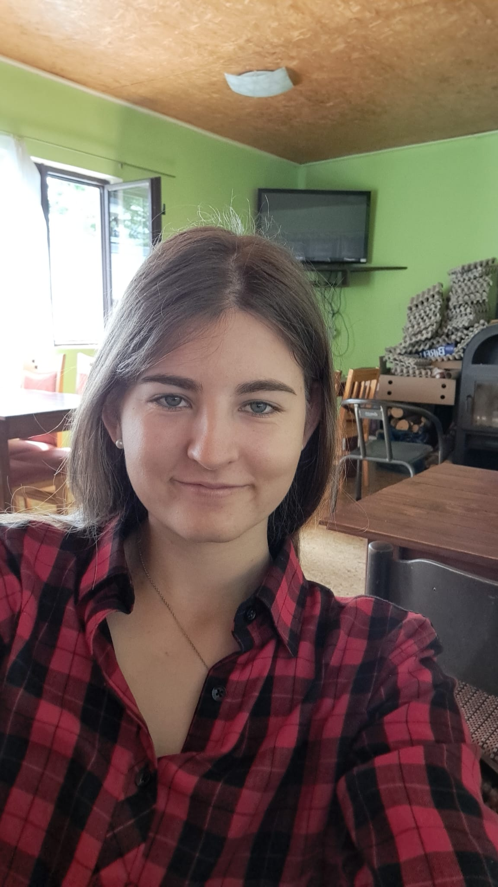
Já vím lásko nebyl jsem úplně milej v tuto dobu , ale musíš pochopit , říkala jsi nikdy nedám práci před tebe a hned třetí den jsi to udělala, nebylo to úplně nejsvětlejší období zvlášť když jsi měla být doma odložily jsme dovolenou ale i tak jsi tam šla ale o tom jindy , Miluju tě
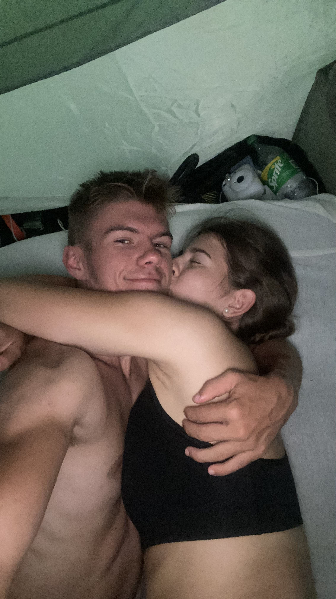
Lásko ten nejkrásnější týden v mém životě , díky tomu že jsme byly celý týden jen ty a já . ps: blue laguna
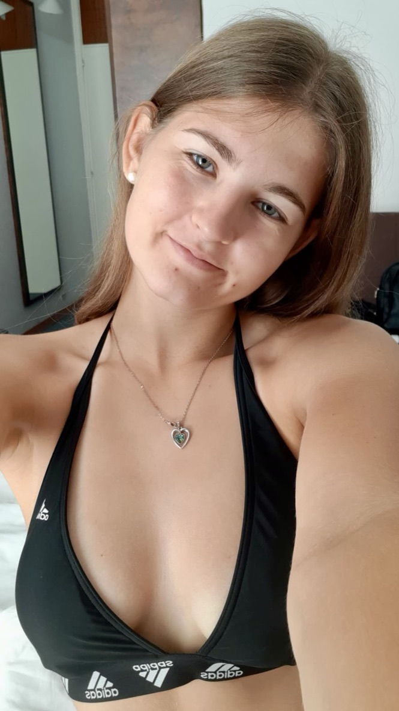
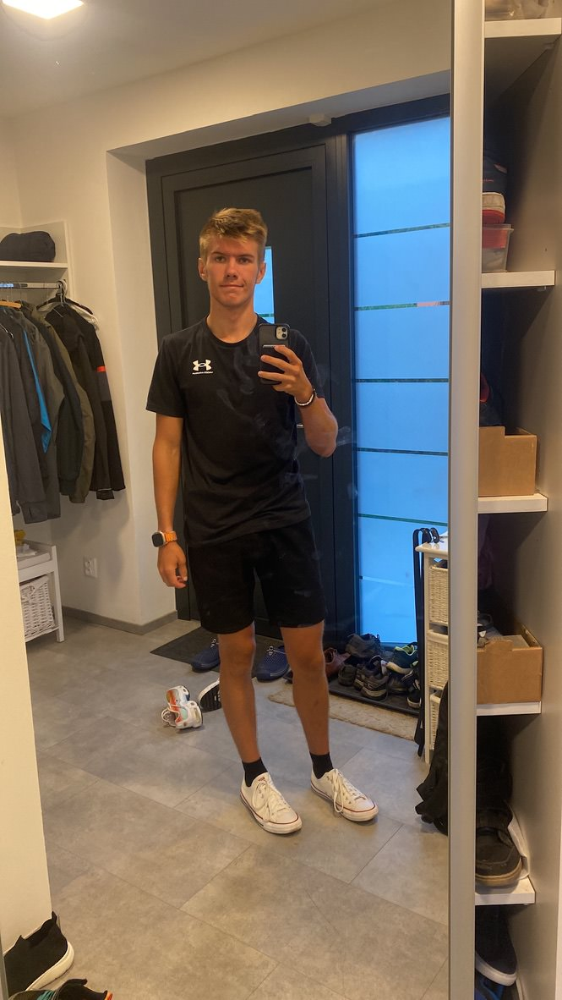
TY v chorvatsku já doma , a nasraný pjomiň :( , ale jak ty říkáš i tak tě miluju lásko :)
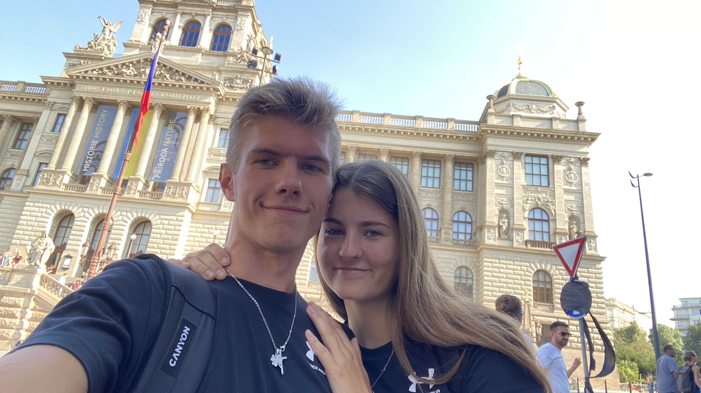
Pokud nejsem blbej poprvé spolu v Praze Bejb, mimochodem vypadala jsi neskutečně nádherně
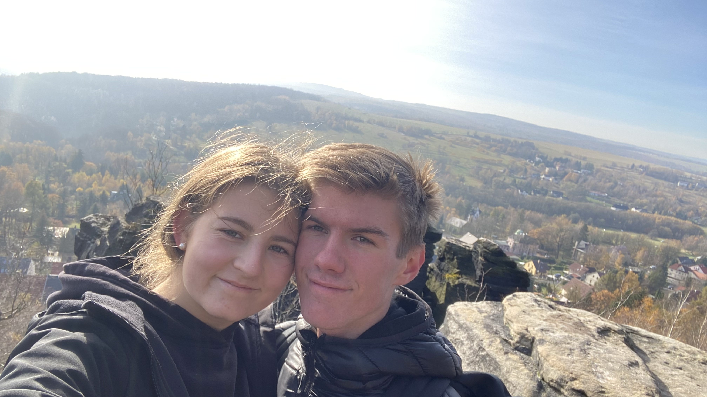
Tiské skály zlato vzpomínáš , krásný den díky tomu že jsme byli spolu, jsem strašně šťastný za každý den co tě mohu vidět
Byl to krásný večer , byl jsem na svém oblíbeném intepretovi s tím nejoblíbenějším člověkem v mém životě ( i nejkrásnějším)
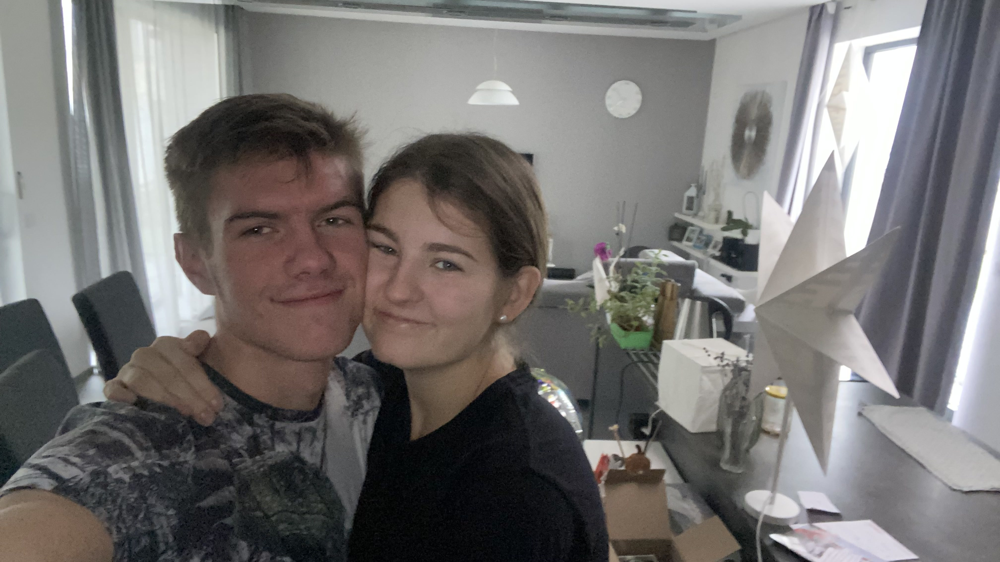
Ty nejkrásnější narozeniny co jsem kdy měl , moc ti za ně děkuju a děkuju že jsi stále se mnou
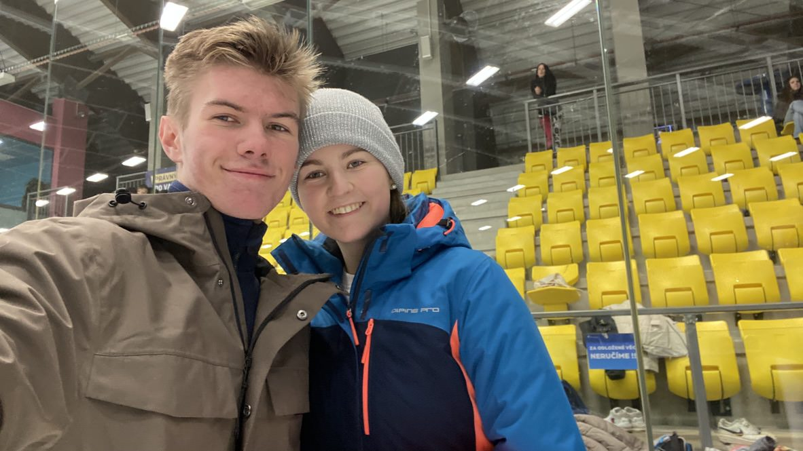
Jupííí tady jsme se pořádně spolu sklouzli a já si znovu ověřil že ta nejkrásnější holka pod sluncem jsi ty zlato
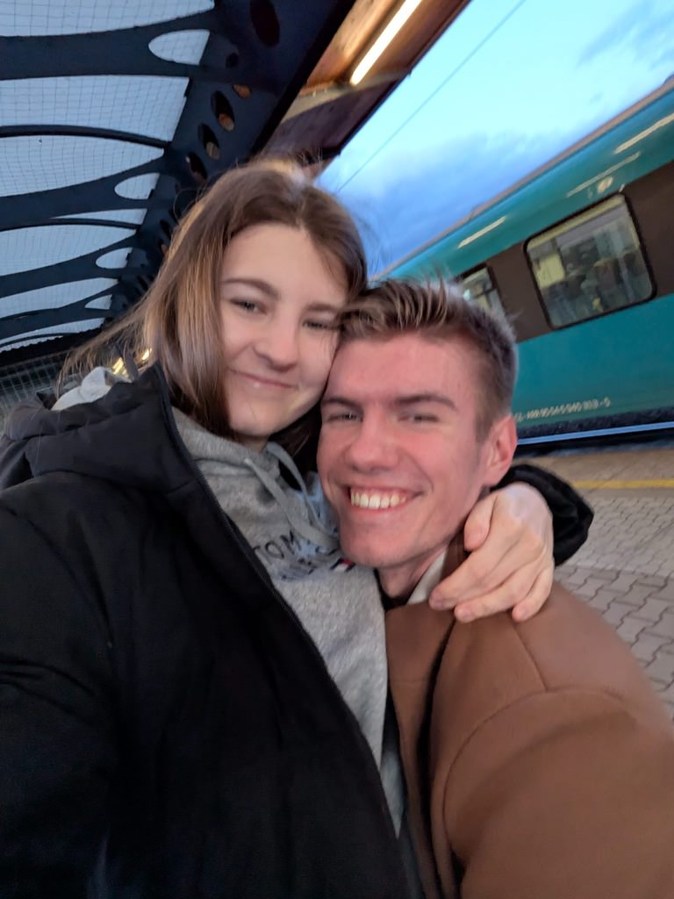
Vzpomínáš ty a já nádraží dost častý u nás dvou ale pořád mega kouzelný když jsi tam se mnou, nevím proč ale pokaždý co teď jedu okolo Ústeckého nádraží se koukám jestli tam náhodou nejsi asi síla zvyku
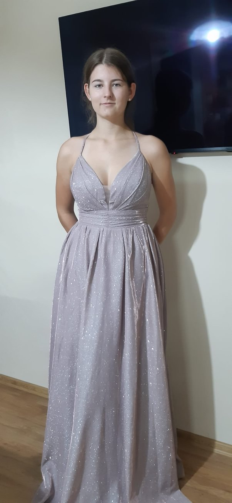
Na plesu jsi naprosto zářila a byla jsi stopro a tuplem ta nejkrásnější a potom společný spinkání no bomba
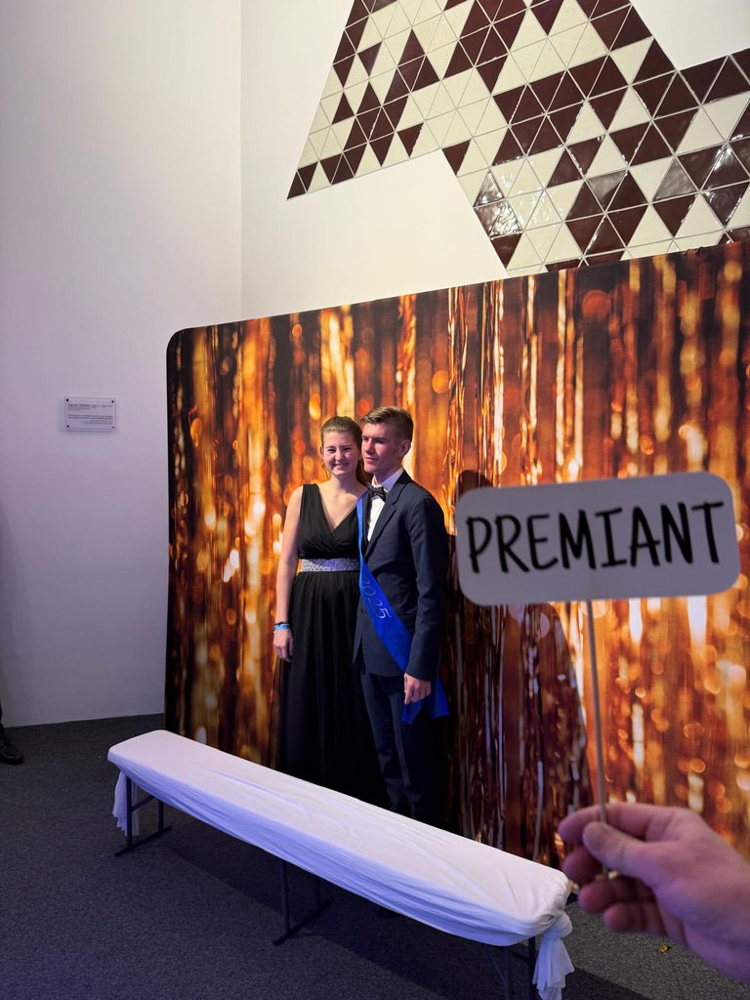
Sice to není tak pro mě veselá vzpomínka ale vypadala jsi neskutečně nádherně lásko neskutečně moc
Lásko dny plynou ale my dva jsme díky bohu stále spolu a doufám že ještě budeme dlouho kotě , jsi to nejlepší co mě kdy v životě potkalo , děkuju že jsi moje žena a láska mého života